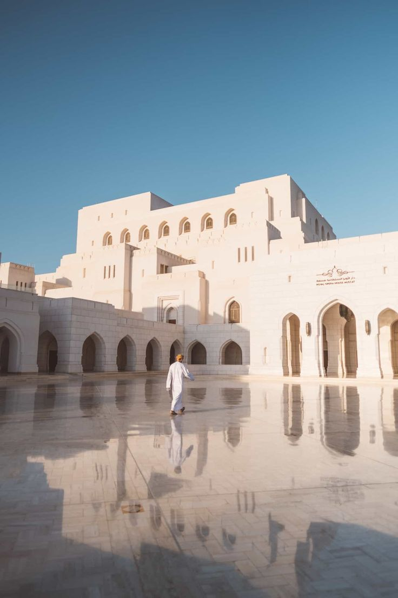
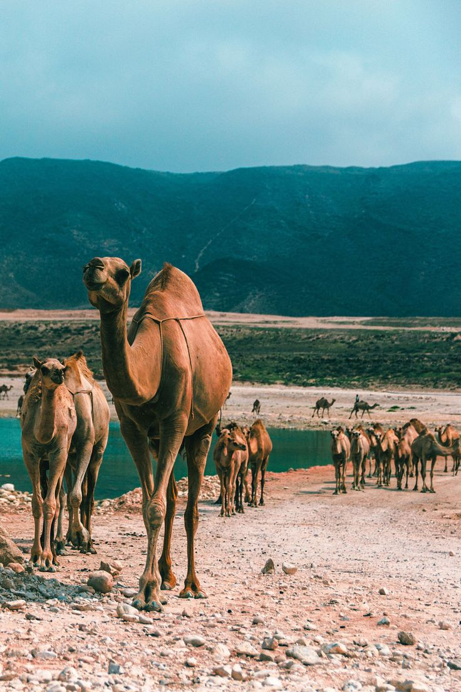
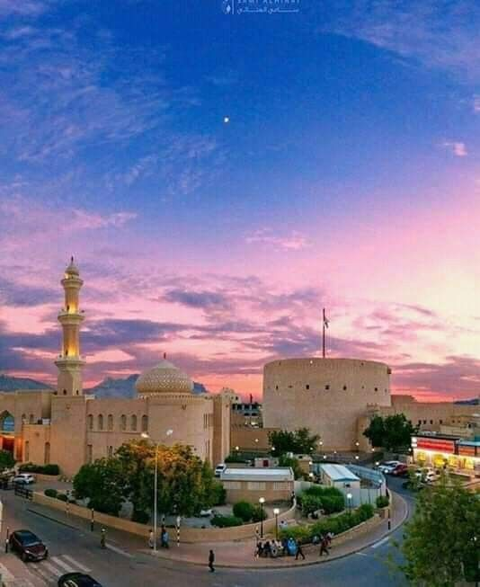

Oman For Tourism
Tourist Destinations in Oman
Muscat
The capital of Oman, Muscat is a vibrant modern city with a rich history. Tourist attractions in Muscat include the Sultan Qaboos Grand Mosque, the Royal Opera House Muscat, and the Al Alam Palace.
For inquiries and requests, please contact the tour guide department.

Salalah
A coastal city located in southern Oman, Salalah is known for its mild climate, green valleys, and beautiful beaches. Tourist attractions in Salalah include Mughsayl Beach, Ain Razat Oasis, and the archeological city of Sumhuram.
For inquiries and requests, please contact the tour guide department.

Nizwa
An inland city situated in northern Oman, Nizwa is famous for its traditional souq, ancient fort, and grand mosque. Tourist attractions in Nizwa include Nizwa Fort, Nizwa Souq, and Nizwa Grand Mosque.
For inquiries and requests, please contact the tour guide department.

Wahiba Sands
A vast desert located in central Oman, the Wahiba Sands is famous for its towering sand dunes, unique plants, and wildlife. Popular activities in the Wahiba Sands include camel riding, camping, and desert safaris.
For inquiries and requests, please contact the tour guide department.

Hajar Mountains
A mountain range located in northeastern Oman, the Hajar Mountains are famous for their stunning hikes, breathtaking views, and traditional villages. Popular activities in the Hajar Mountains include hiking, camping, and mountain climbing.
For inquiries and requests, please contact the tour guide department.